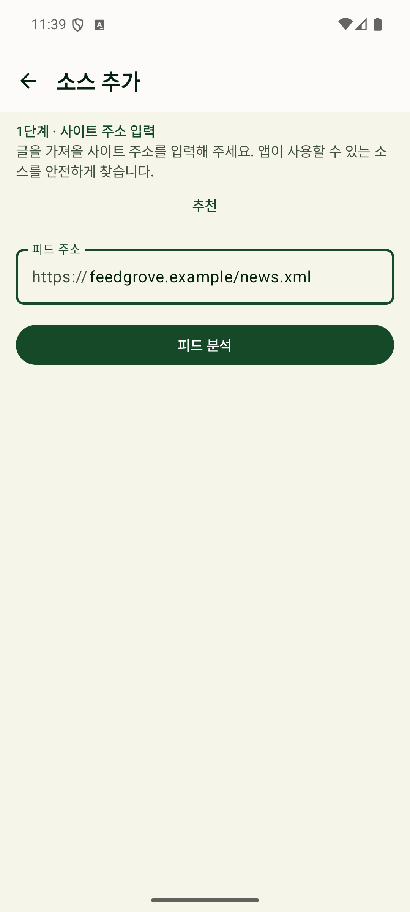
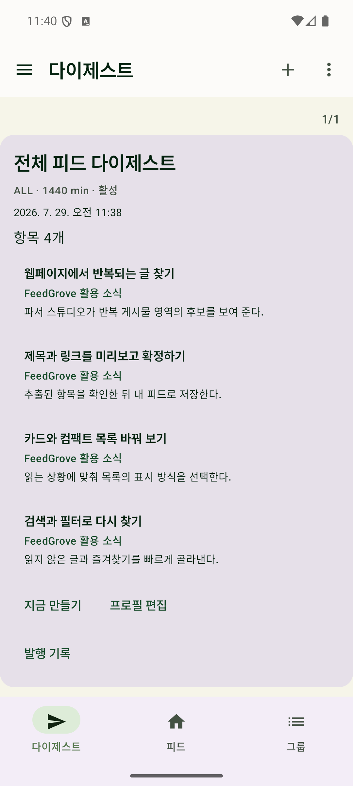
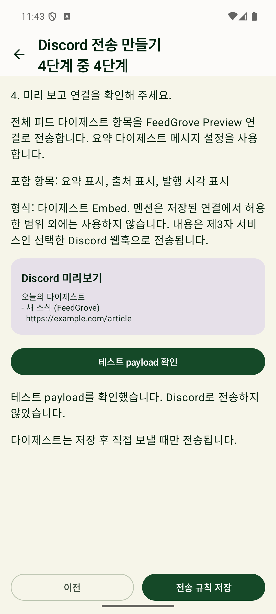

모아서 읽기
카드, 컴팩트, 그룹 보기와 검색으로 여러 출처의 새 글을 한곳에서 확인합니다.
RSS와 Atom, 일반 웹페이지를 한곳에 모아 카드로 읽고, 필요한 소식만 다이제스트로 정리하세요. FeedGrove는 계정 없이 기기 안에서 내 피드를 관리하는 로컬 우선 Android 앱입니다.

YOUR WEB, CULTIVATED
RSS와 Atom 피드는 주소에서 후보를 찾을 수 있습니다. 공식 피드가 없는 공개 웹페이지는 파서 스튜디오에서 반복 영역을 고르고 결과를 미리본 뒤 직접 확정할 수 있습니다.
카드, 컴팩트, 그룹 보기와 검색으로 여러 출처의 새 글을 한곳에서 확인합니다.
읽음과 즐겨찾기를 관리하고, 규칙에 맞는 글을 다이제스트로 묶습니다.
사용자가 직접 등록하고 활성화한 Discord 웹훅으로 선택한 콘텐츠를 전송합니다.
CAPABILITIES
표준 피드와 일반 페이지를 같은 앱에서 다루되, 콘텐츠와 설정은 로컬 중심으로 관리합니다.
미리보기를 보며 반복 콘텐츠 영역을 고르고 DOM 후보를 구성합니다. DOM으로 해결하기 어려운 페이지에는 정규식 후보와 안전성 검증 흐름을 제공합니다.
카드, 컴팩트, 그룹 보기, 검색, 읽음과 즐겨찾기로 쌓인 소식을 빠르게 분류합니다.
원하는 조건의 글을 모아 다이제스트로 확인하고 반복되는 정보 탐색 시간을 줄입니다.
피드, 글, 읽음 상태와 즐겨찾기를 Room에 저장해 네트워크가 불안정한 상황에서도 보관된 콘텐츠를 읽습니다.
plain, single, multi, digest embed 형식을 지원합니다. 사용자가 자신의 웹훅을 등록하고 활성화한 경우에만 전송합니다.
REAL APP SCREENS
아래 이미지는 Play 등록정보용 실제 FeedGrove 화면입니다.



Google Play에서 설치한 뒤 주소 하나로 첫 피드를 추가할 수 있습니다. 공식 피드가 없는 공개 페이지는 파서 스튜디오에서 직접 구성할 수 있습니다.
Google Play에서 설치Android 8.0 이상 기기에 FeedGrove를 설치합니다. 별도 서비스 계정을 만들 필요가 없습니다.
RSS나 Atom 주소를 입력하거나 공개 웹페이지에서 피드 후보를 만들고 미리보기 결과를 직접 확정합니다.
그룹, 검색, 읽음, 즐겨찾기와 다이제스트를 설정합니다. 필요한 경우에만 본인 소유의 Discord 웹훅을 연결합니다.
LOCAL FIRST
FeedGrove는 별도 서비스 계정을 요구하지 않습니다. 외부 전송은 사용자가 직접 구성한 기능을 활성화했을 때만 동작합니다.
로컬 우선 보관피드와 읽기 상태는 기기 내 Room 데이터베이스를 중심으로 관리합니다.
오프라인 다시 읽기저장된 제목, 링크, 요약과 항목 정보를 다시 볼 수 있습니다. 원문 전체를 저장하는 기능은 아닙니다.
선택형 Discord 연동사용자가 자신의 웹훅을 등록하고 전송을 선택한 경우에만 외부로 전달합니다.
공개 페이지 범위로그인, 유료벽, CAPTCHA나 접근 제한을 우회하지 않습니다. 희망 갱신 주기는 Android 절전 정책에 따라 실제 실행 시각이 달라질 수 있습니다.
지원 환경 Android 8.0(API 26) 이상언어 한국어, English, 日本語상태 Google Play 출시
AVAILABLE ON GOOGLE PLAY
RSS와 웹페이지를 한곳에 모아 읽고 필요한 소식만 정리할 수 있습니다.